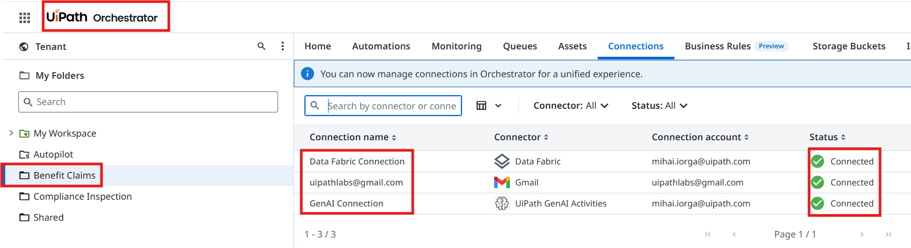
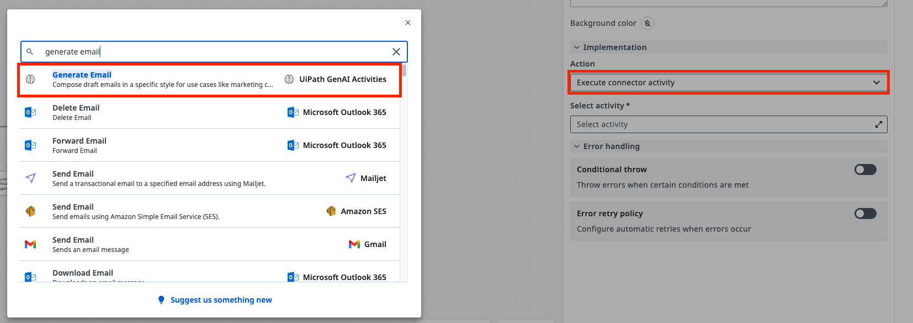
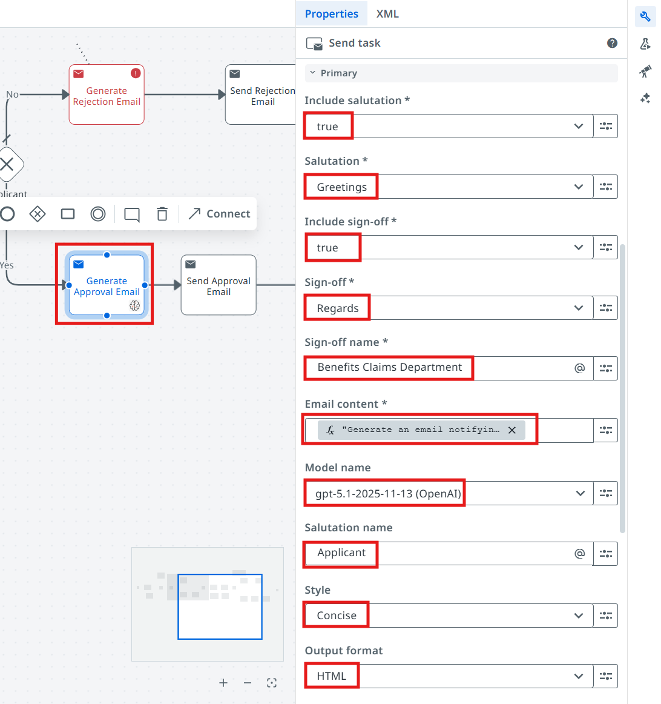
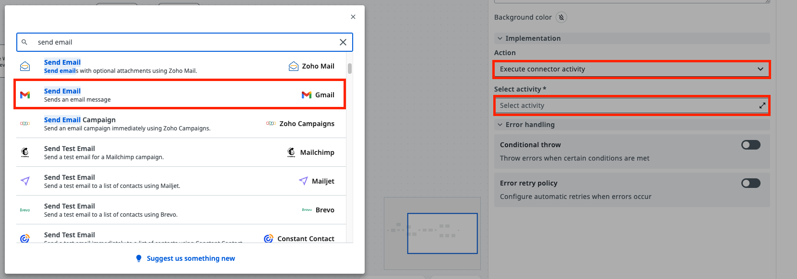
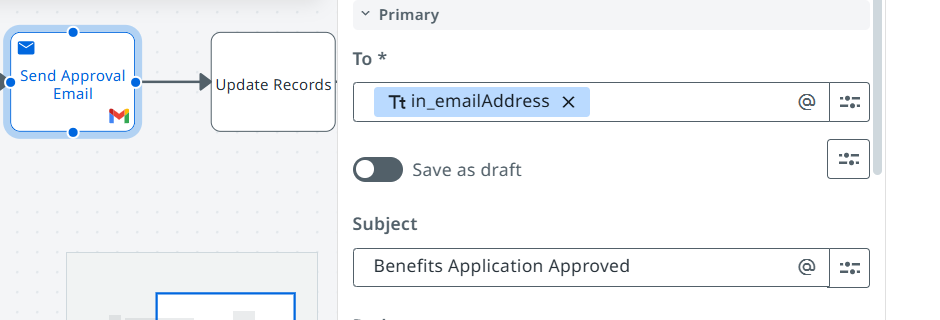
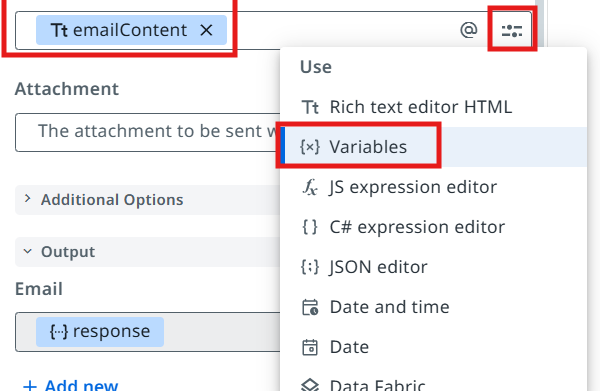
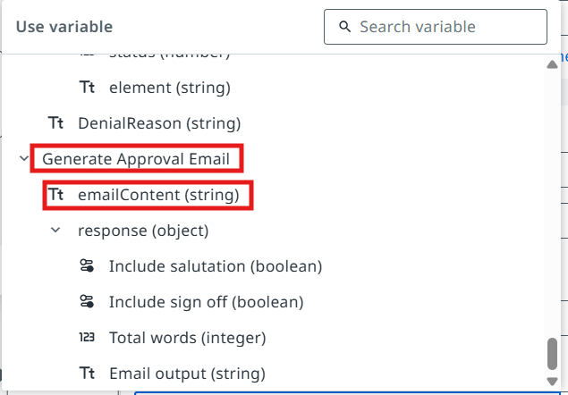
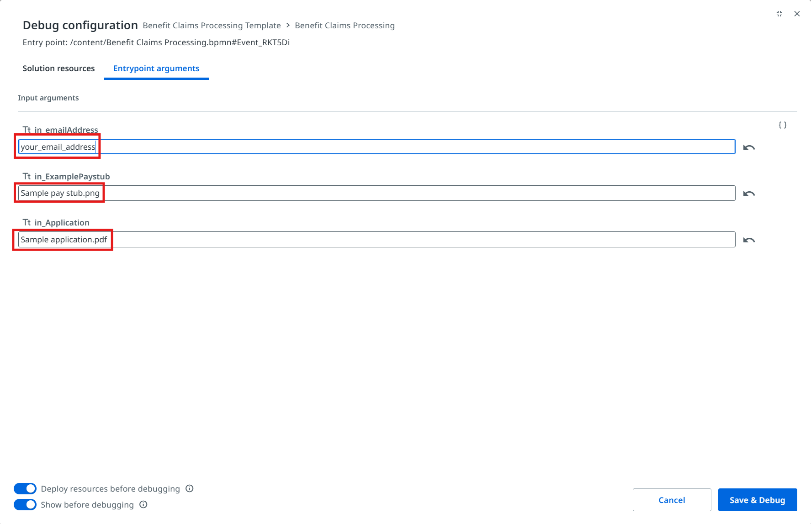
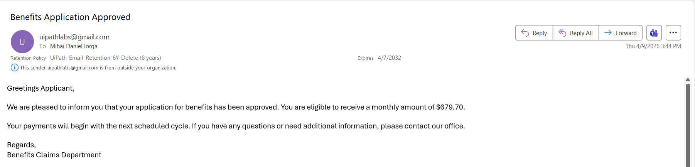

Update external systems using API — Benefit Approval Case¶
Here is our plan for this lesson:
- Generate a benefits approval email using Gen AI
- Send the email to the benefits applicant, using an Integration Service Gmail connector
Goal¶
Let's configure the tasks in the workflow accordingly, so that the applicant is notified once the case worker has approved the claim.
Integration Service¶
UiPath Integration Service is the fastest and most convenient way to automate API enabled applications. It takes care of authorization and authentication, helping you centralize management of API connections and also allowing faster integration into SaaS platforms.
Let's see what we have prepared:

There are 3 connections available:
- Gmail Connection that we can use to send emails
- Data Fabric Connection where we can store any type of data (tables, files, etc.)
- GenAI Connection which we will use to generate emails using LLMs
Good part: we don't need to worry about credentials or permissions today — platform administrators have prepared these for our automation, and they are also taking care about securing and restricting access to these.
Check your tenant
Make sure you are using the right tenant, or contact your trainer if there are issues with connections.
Steps¶
1. Configure the Generate Approval Email task¶
Let's configure the Generate Approval Email task in Maestro. For this, we are going to use the UiPath GenAI Activities — specifically the Generate Email activity.
- Action will be Connector → Execute Connector Activity
- Pick the Generate Email GenAI activity


Next, let's configure the input properties listed below.
| Property | Value |
|---|---|
| Include salutation | true |
| Salutation | Greetings |
| Include sign-off | true |
| Sign-off | Regards |
| Sign-off name | Benefits Claims Department |
| Model | gpt-5.1 |
| Salutation name | Applicant |
| Style | Concise |
| Output format | HTML |
Email content — enter this as a JS Expression:
"Generate an email notifying the recipient that their application for benefits has been approved. Monthly ammount: "+vars.calculation+" $."
2. Configure the Send Approval Email task¶
Once we have the generated email, we can send it to the applicant using the Gmail connector. Let's configure the Send Approval Email task.
- Action will be Connector → Execute Connector Activity
- Pick the Gmail - Send Email activity

3. Configure the activity properties¶
- To — we are going to use the in_EmailAddress argument from the start event
- Subject:

- Body — the emailContent output variable from the Generate Approval Email task

Pick the emailContent variable for the Body field.

4. Test the approval scenario¶
Time to test the approval scenario! Configure the debug values of the BPMN process as in the picture below. In the Case Worker Review action center task, approve the benefits application.
In the debug panel, pass the following argument values:
in_emailAddress: your own email address
in_ExamplePaystub: Sample pay stub.png
in_Application: Sample application.pdf

Once the execution of the process is completed, you should receive the benefits approval email:

Time to move to the next one!